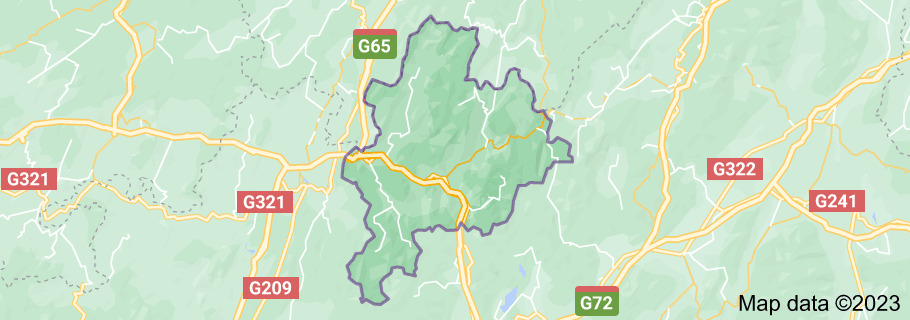

Las terrazas

Localizadas a 100 km de Guilin, en el condado de Longsheng, las Terrazas de Arroz de Longji son uno de los parajes más espectaculares que podremos encontrar en nuestro viaje por China. Situado en un enclave idílico de montaña, a más de 1.500 metros de la altura, las visita a Longji permite descubrir una parte de China más alternativa y mucho más étnica.
Pueblo 平安

El área de Ping’an son el grupo de terrazas más populares para visitar. Al ser la caminata muy sencilla, es la opcion más elegida entre los turistas que recorren la zona. Aparte de las espectaculares visitas, la zona de Ping’an tambien perite conocer pequeñas aldeas étnicas como la de Huangluo, habitada por los Red Yao, una minoría famosa por el cabello largo de sus mujeres, que en algunos casos pueden llegar a casi los 2 m de longitud. Durante la caminata se pasa por varios miradores donde se pueden disfrutar de unas visitas increibles. Estas áreas escénicas son conocidas como el Mirador de las 7 Estrellas que acompañan a la Luna y el Mirador de los 9 Dragones y 5 Tigres.
Pueblo 金竹状

La aldea Jinzhu Zhuang lleva el nombre del bosque de bambú dorado que se encuentra frente a la aldea. Jinzhu significa el bambú dorado en inglés. Las casas sobre pilotes están bien conservadas allí. Encontrará el tótem de madera de Moyi King of Zhuang People que está colgado en un árbol viejo en el pueblo, la puerta del pueblo viejo, los pozos viejos y los cedros. Las exhibiciones en el museo cultural nacional le cuentan algo de la cultura interesante y distintiva del pueblo.
Montañas 龙脊

Terraza de arroz originalmente se construido en la dinastía Yuan y completado en la dinastía Qing , tiene una historia más de 650 años. Los antepasados que cultivan la primera terraza de arroz nunca pensaría que su sabiduría y el trabajo podrían ser un lugar tan hermoso y pintoresco. La montaña se ver como caracol gigante o abanico enorme y Las terrazas igual como cintas y cadenas llenas de las montañas. En esta amplia tierra, sendero serpentea está entre las terrazas. .y la tierra llena agua es como espejo,tranquilo,brillante. Las canciones populares permanecen en entre las montañas. Es difícil imaginar que hace 800 años el primer grupo de Zhuang y Yao como vivían en estas profundas montañas y bosques, y como abrieron el primer campo dependen la agricultura tan atrasada. El arroz era tan atractivo para ellos, tal vez que no pensaron nada y sus descendientes aprendieron de ellos a cultivar arroz un día y otro día, año tras año. A partir de la dinastía Yuan hasta la dinastía Qing, más o menos 650 años, el paisaje increíble de terrazas de arroz fueron finalmente completado.
Mapa
Galería de imagenes